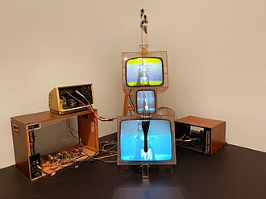

Texto

¡Hola!
Comenzamos un nuevo proyecto. Ya sabemos que el arte tiene una finalidad y desde nuestra asignatura artística nos convertiremos en cineastas, pero en cineastas con consciencia social (¡qué falta nos hace!).
Trabajaremos en la elaboración de un vídeo corto para la prevención de la violencia de género en adolescentes. Tema que nos debe de interesar y mucho!
Aprenderemos:
- Qué es la Violencia de Género
- Cómo se planifica un proyecto artístico
- Crearemos un moodboard o Tablón de inspiración
- Aprenderemos como se diseña y planifica un vídeo haciendo un Storyboard o guion gráfico.
- Grabaremos nuestras escenas
- Aprenderemos a editar un vídeo y a añadir música, efectos y textos.
- Expondremos nuestro trabajo y le daremos difusión.